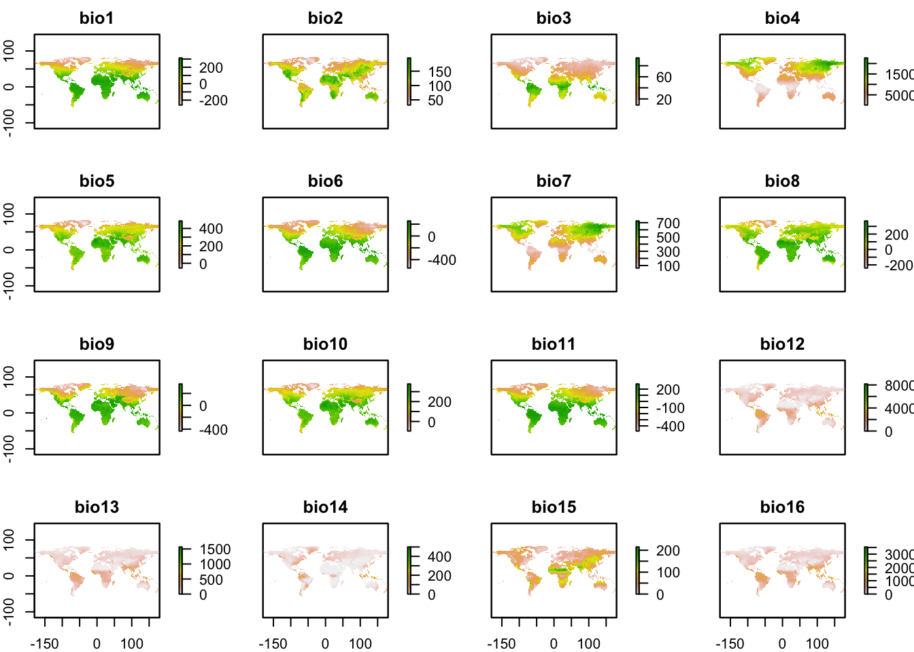

RStudio project
Open the RStudio project that we created in the first session. I recommend to use this RStudio project for the entire course and within the RStudio project create separate R scripts for each session.
# Session 2: Environmental data and save the file in your folder “scripts” within your project folder, e.g. as “2_EnvData.R”In species distribution modelling, we aim to understand how species’ occurrence arise related to environment. Thus, additional to our species data, we need environmental information. Many environmental data are now available at very high spatial resolution, e.g. lidar data (Bakx et al. 2019). However, often, high resolution data are not necessarily available globally - although the data are constantly improving. I can’t give you a full overview over all available data sets. Rather, you should get an idea how you process the data to make best use of them for your biodiversity models.
The raster package is offering direct access to some standard repositories; see the help pages ?getData. We will use this for extracting climate data from the worldclim data (http://worldclim.org/)(Hijmans et al. 2005,@Hijmans2019). Please note that there are also newer climate data sets, e.g. the Chelsa climatologies (http://chelsa-climate.org/) (Karger et al. 2017).
Before we download the climate data, let’s create a directory in today’s folder for storing the climate data.
dir.create("clim_data")Now, we download the 19 bioclimatic variables at a 10’ resolution. Do you know what the 19 bioclimatic variables are? See here: https://www.worldclim.org/data/bioclim.html. Remember to think about your folder structure, where you want to store the climate data!
library(raster)
# You may have to adjust the path to your folder structure:
clim <- getData("worldclim", var="bio", res=10, download=T, path="data/clim_data")## Loading required package: sp# Now, let's look at the data:
clim## class : RasterStack
## dimensions : 900, 2160, 1944000, 19 (nrow, ncol, ncell, nlayers)
## resolution : 0.1666667, 0.1666667 (x, y)
## extent : -180, 180, -60, 90 (xmin, xmax, ymin, ymax)
## crs : +proj=longlat +datum=WGS84 +no_defs
## names : bio1, bio2, bio3, bio4, bio5, bio6, bio7, bio8, bio9, bio10, bio11, bio12, bio13, bio14, bio15, ...
## min values : -269, 9, 8, 72, -59, -547, 53, -251, -450, -97, -488, 0, 0, 0, 0, ...
## max values : 314, 211, 95, 22673, 489, 258, 725, 375, 364, 380, 289, 9916, 2088, 652, 261, ...# Can you explain, what a raster stack is?
plot(clim)
The raster package offers different functionalities to manipulate the spatial data, for example aggregating the data to coarser resolutions (aggregate), cropping (crop()), stacking (stack()):
aggregate(clim[[1]], fact=6, fun=mean)You can also write raster stacks to file:
writeRaster(clim,filename='data/clim_data/bioclim.grd')*.grd is the native file format of the raster package. It consists of two files, a data file and a header file (*.gri).
Most standard GIS formats can be read in by raster() as well, for example data on land cover, other remote sensing-derived products, etc.
Last, we can join our species and environmental data. Such joined species-environment data later serve as input to our species distribution models.
# Load our previously saved species data:
load(file='data/gbif_shrew.RData')When we have coordinate data, as we have in the GBIF data, we can use these coordinates to “pierce” through raster layers. That’s one of the easiest ways to extract relevant environmental data for our species records. However, as a very first step we have to decide which GBIF information should be retained in our data set.
# The GBIF data contain a lot of columns that we probably don't need:
head(gbif_shrew)# I suggest to keep the following columns for now:
gbif_shrew2 <- gbif_shrew[,
c("key", "scientificName", "decimalLatitude", "decimalLongitude", "basisOfRecord", "speciesKey", "species", "year")]
# Our environmental data are:
clim## class : RasterStack
## dimensions : 900, 2160, 1944000, 19 (nrow, ncol, ncell, nlayers)
## resolution : 0.1666667, 0.1666667 (x, y)
## extent : -180, 180, -60, 90 (xmin, xmax, ymin, ymax)
## crs : +proj=longlat +datum=WGS84 +no_defs
## names : bio1, bio2, bio3, bio4, bio5, bio6, bio7, bio8, bio9, bio10, bio11, bio12, bio13, bio14, bio15, ...
## min values : -269, 9, 8, 72, -59, -547, 53, -251, -450, -97, -488, 0, 0, 0, 0, ...
## max values : 314, 211, 95, 22673, 489, 258, 725, 375, 364, 380, 289, 9916, 2088, 652, 261, ...# We can extract the environmental data for the GBIF coordinates.
# Coordinates are always provided as x/y format, in our case lon/lat.
# The command "extract" is used by several packages, so I tell R explicitly
# that I want to use the extract function from the raster namespace.
# We also extract the cellnumbers as this allows checking for duplicates later.
head(raster::extract(x = clim,
y = data.frame(gbif_shrew2[,c('decimalLongitude','decimalLatitude')]), cellnumbers=T ))## cells bio1 bio2 bio3 bio4 bio5 bio6 bio7 bio8 bio9 bio10 bio11 bio12
## [1,] 569230 62 83 30 6512 207 -64 271 144 -22 144 -22 850
## [2,] 547643 47 94 33 6777 196 -88 284 132 1 132 -42 1495
## [3,] 543289 74 80 32 6125 209 -41 250 151 30 151 -5 1147
## [4,] 549799 42 93 33 6582 188 -91 279 125 -33 125 -44 1370
## [5,] 549799 42 93 33 6582 188 -91 279 125 -33 125 -44 1370
## [6,] 564903 14 64 28 5644 134 -90 224 85 -55 85 -55 1022
## bio13 bio14 bio15 bio16 bio17 bio18 bio19
## [1,] 105 37 34 304 113 304 113
## [2,] 183 89 26 529 293 529 324
## [3,] 120 77 15 342 250 342 270
## [4,] 168 77 27 490 255 490 272
## [5,] 168 77 27 490 255 490 272
## [6,] 127 52 28 355 169 355 169# Our new data frame:
gbif_shrew2 <- cbind(gbif_shrew2, raster::extract(x = clim, y = data.frame(gbif_shrew2[,c('decimalLongitude','decimalLatitude')]), cellnumbers=T ))We now have to inspect the data again to see whether we have any missing values or any other issues.
summary(gbif_shrew2)Because we superimposed an arbitrary resolution now when joining the GBIF and environmental data, we could potentially have multiple records in a single raster cell. As we have extracted the cell numbers from the raster layer, checking for duplicates is very simple.
# Check for duplicates
duplicated(gbif_shrew2$cells)## [1] FALSE FALSE FALSE FALSE TRUE FALSE FALSE FALSE FALSE TRUE FALSE FALSE
## [13] FALSE FALSE FALSE FALSE FALSE FALSE FALSE FALSE FALSE FALSE FALSE FALSE
## [25] FALSE FALSE FALSE FALSE TRUE FALSE FALSE TRUE FALSE FALSE TRUE FALSE
## [37] TRUE FALSE FALSE FALSE FALSE FALSE FALSE FALSE FALSE TRUE FALSE FALSE
## [49] FALSE TRUE FALSE FALSE FALSE TRUE FALSE FALSE TRUE FALSE TRUE FALSE
## [61] TRUE TRUE FALSE TRUE FALSE TRUE FALSE FALSE FALSE FALSE TRUE FALSE
## [73] FALSE TRUE TRUE FALSE FALSE FALSE TRUE TRUE FALSE FALSE FALSE FALSE
## [85] TRUE FALSE FALSE TRUE FALSE TRUE FALSE FALSE TRUE FALSE TRUE TRUE
## [97] FALSE FALSE FALSE TRUE FALSE FALSE TRUE TRUE TRUE FALSE TRUE FALSE
## [109] TRUE FALSE FALSE FALSE FALSE FALSE TRUE TRUE FALSE TRUE TRUE TRUE
## [121] FALSE FALSE FALSE FALSE TRUE TRUE FALSE FALSE TRUE TRUE TRUE FALSE
## [133] TRUE TRUE TRUE TRUE TRUE FALSE TRUE TRUE FALSE FALSE FALSE FALSE
## [145] TRUE TRUE TRUE FALSE TRUE TRUE TRUE FALSE TRUE TRUE FALSE FALSE
## [157] TRUE TRUE FALSE TRUE FALSE TRUE TRUE TRUE TRUE FALSE TRUE TRUE
## [169] TRUE TRUE TRUE FALSE TRUE TRUE FALSE TRUE TRUE FALSE FALSE TRUE
## [181] TRUE TRUE FALSE FALSE TRUE TRUE FALSE FALSE FALSE TRUE TRUE FALSE
## [193] TRUE TRUE TRUE TRUE TRUE TRUE FALSE TRUE TRUE TRUE FALSE FALSE
## [205] TRUE FALSE TRUE TRUE TRUE FALSE TRUE TRUE FALSE FALSE FALSE TRUE
## [217] TRUE TRUE TRUE TRUE FALSE TRUE TRUE TRUE FALSE TRUE TRUE FALSE
## [229] TRUE FALSE FALSE TRUE TRUE FALSE FALSE TRUE TRUE TRUE TRUE TRUE
## [241] TRUE FALSE FALSE FALSE FALSE FALSE FALSE FALSE TRUE TRUE FALSE FALSE
## [253] TRUE TRUE FALSE FALSE FALSE FALSE FALSE TRUE TRUE FALSE FALSE FALSE
## [265] TRUE FALSE TRUE TRUE TRUE FALSE TRUE TRUE FALSE# Only retain non-duplicated cells:
gbif_shrew_env <- gbif_shrew2[!duplicated(gbif_shrew2$cells),]Remember to save your resulting data frames!
save(gbif_shrew_env,file='data/gbif_shrew_env.RData')Exercise:
Merge the GBIF data for your own species (from practical 1) with the climate data.
Bakx, Tristan R. M., Zsófia Koma, Arie C. Seijmonsbergen, and W. Daniel Kissling. 2019. “Use and Categorization of Light Detection and Ranging Vegetation Metrics in Avian Diversity and Species Distribution Research.” Diversity and Distributions 25 (7): 1045–59. https://doi.org/10.1111/ddi.12915.
Hijmans, R. J. 2019. Raster: Geographic Data Analysis and Modeling. https://CRAN.R-project.org/package=raster.
Hijmans, R. J., S. E. Cameron, J. L. Parra, P. G. Jones, and A. Jarvis. 2005. “Very High Resolution Interpolated Climate Surfaces for Global Land Areas.” International Journal of Climatology 25 (15): 1965–78. https://doi.org/10.1002/joc.1276.
Karger, Dirk Nikolaus, Olaf Conrad, Juergen Boehner, Tobias Kawohl, Holger Kreft, Rodrigo Wilber Soria-Auza, Niklaus E. Zimmermann, H. Peter Linder, and Michael Kessler. 2017. “Climatologies at High Resolution for the Earth’s Land Surface Areas.” Scientific Data 4 (September). Springer Nature: 170122.